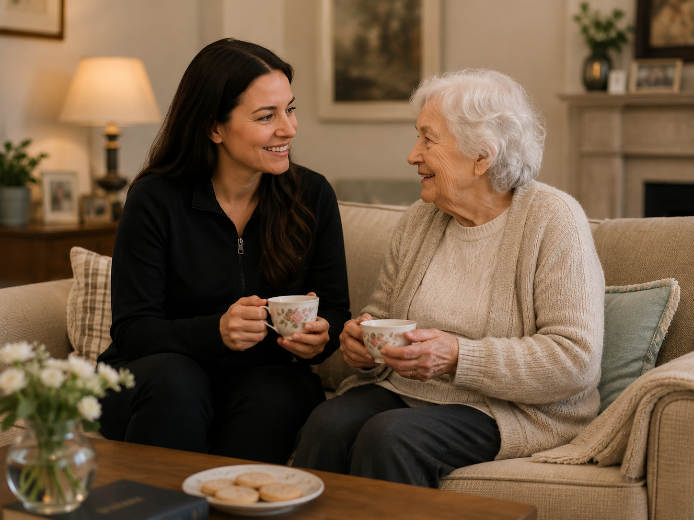
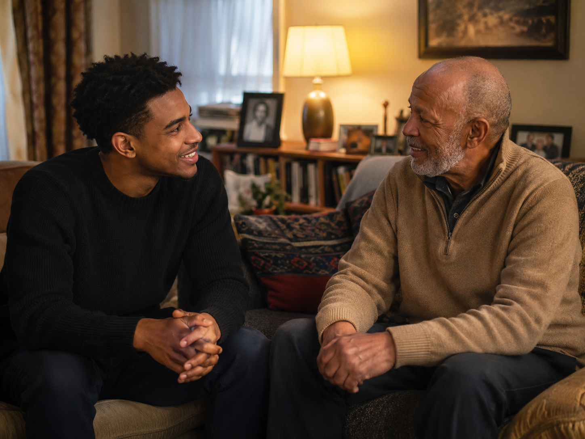
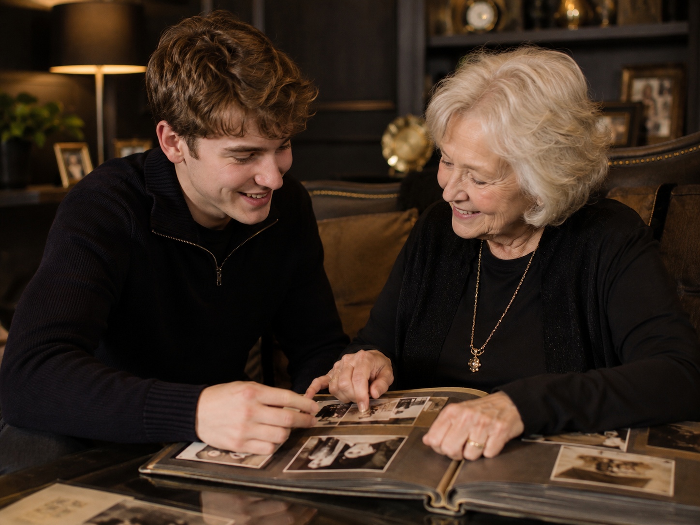

What companions can do
- Chat and keep someone company
- Join in hobbies and simple activities
- Go for gentle walks
- Visit cafés, parks or local places
- Read, play games or do puzzles together
- Support confidence with social outings
Friendly companionship in St Andrews
Warm, reliable company for older adults who would like conversation, shared activities and regular social contact.
Our companions spend meaningful time with clients through conversation, gentle outings, games, reading, hobbies and simple shared activities. They are there for company, not care.
Social companionship only. We do not provide personal care, medical care, cooking, cleaning, lifting or regulated care services.


A warm local service
St Andrews Companion Services is designed for older adults who would enjoy regular friendly visits from someone kind, patient and reliable. The focus is on conversation, confidence, companionship and meaningful time together.
What we offer
The service is intentionally simple: a trusted companion visits to spend time with someone who would benefit from regular social contact.
Meet the companions
These are example profiles for now. Later, this section can use real companion photos, short bios and availability information.
Emily enjoys chatting, reading and gentle walks. She is patient, kind and reliable, and has experience volunteering with older adults.
Calm, friendly and reliable, Callum enjoys spending time with clients around their own interests. He is happy to help with technology, games and gentle outings.

Companionship in action
Some clients may prefer a quiet cup of tea and conversation. Others may enjoy crosswords, a walk, a trip to a café, reading together, or simply having someone present for friendly company.
The aim is not to rush or overcomplicate the visit. It is to provide calm, reliable, enjoyable social time.
Activity ideas
A relaxed visit focused on chatting, listening and companionship.
Short local walks for fresh air, confidence and light social time.
Reading books, newspapers, letters or magazines aloud together.
Crosswords, board games, cards or other gentle activities.
Company for cafés, gardens, shops or local community spaces.
Patient company while using a phone, tablet or video call app.
Trust and boundaries
Families need to know exactly what the service is, what it is not, and how visits are arranged. This prototype keeps those boundaries visible and easy to understand.
Companions provide social contact only. Care tasks are outside the service.
Visits can be arranged around interests, personality and preferred activities.
Enquiries can be made by the person themselves, a family member or a trusted contact.
Policies, checks and procedures should be finalised before launching formally.
How it works
Every enquiry is reviewed before any visit is arranged, so we can understand the person, check whether the service is suitable, and suggest a good companion match.
Tell us who the service is for and what kind of companionship they would enjoy.
We discuss interests, preferences, availability and whether the service is suitable.
If the service is suitable, we suggest a companion based on interests, personality and availability.
The first visit is kept simple, relaxed and clearly within the companionship-only service boundary.
If everyone is comfortable and happy, visits can continue on a regular or occasional basis.
Questions
No. This is a social companionship service. Companions do not provide personal care, medical care, cooking, cleaning, lifting or regulated care services.
It is mainly intended for older adults who would enjoy conversation, regular company, simple activities or gentle outings.
Yes. Family members or trusted contacts can make an initial enquiry, as long as the person receiving the service is involved and comfortable with the arrangement.
Not yet. This is a prototype. Before taking real bookings, the business should finalise its safeguarding, privacy, insurance, complaints and suitability procedures.
Ready to enquire?
Complete our enquiry form and we will contact you within 1–2 working days to discuss the situation, explain the service clearly, and check whether companionship visits would be suitable.
Phone: 07702822246
Email: standrewscompanions@gmail.com
Area: St Andrews and surrounding areas
Response time: Usually within 1–2 working days.